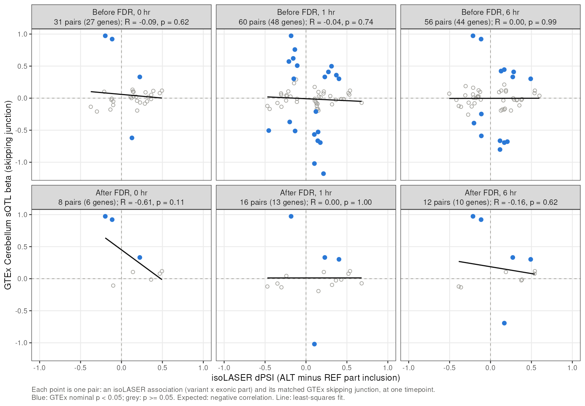

Allele-specific splicing vs GTEx Cerebellum sQTLs
XSun
2026-10-15
Last updated: 2026-10-15
Checks: 6 1
Knit directory: long_read_rna/
This reproducible R Markdown analysis was created with workflowr (version 1.7.0). The Checks tab describes the reproducibility checks that were applied when the results were created. The Past versions tab lists the development history.
The R Markdown file has unstaged changes. To know which version of
the R Markdown file created these results, you’ll want to first commit
it to the Git repo. If you’re still working on the analysis, you can
ignore this warning. When you’re finished, you can run
wflow_publish to commit the R Markdown file and build the
HTML.
Great job! The global environment was empty. Objects defined in the global environment can affect the analysis in your R Markdown file in unknown ways. For reproduciblity it’s best to always run the code in an empty environment.
The command set.seed(20260908) was run prior to running
the code in the R Markdown file. Setting a seed ensures that any results
that rely on randomness, e.g. subsampling or permutations, are
reproducible.
Great job! Recording the operating system, R version, and package versions is critical for reproducibility.
Nice! There were no cached chunks for this analysis, so you can be confident that you successfully produced the results during this run.
Great job! Using relative paths to the files within your workflowr project makes it easier to run your code on other machines.
Great! You are using Git for version control. Tracking code development and connecting the code version to the results is critical for reproducibility.
The results in this page were generated with repository version 2f55116. See the Past versions tab to see a history of the changes made to the R Markdown and HTML files.
Note that you need to be careful to ensure that all relevant files for
the analysis have been committed to Git prior to generating the results
(you can use wflow_publish or
wflow_git_commit). workflowr only checks the R Markdown
file, but you know if there are other scripts or data files that it
depends on. Below is the status of the Git repository when the results
were generated:
Unstaged changes:
Modified: analysis/isolaser_fdr.Rmd
Modified: analysis/isolaser_gtex_comparison.Rmd
Note that any generated files, e.g. HTML, png, CSS, etc., are not included in this status report because it is ok for generated content to have uncommitted changes.
These are the previous versions of the repository in which changes were
made to the R Markdown
(analysis/isolaser_gtex_comparison.Rmd) and HTML
(docs/isolaser_gtex_comparison.html) files. If you’ve
configured a remote Git repository (see ?wflow_git_remote),
click on the hyperlinks in the table below to view the files as they
were in that past version.
| File | Version | Author | Date | Message |
|---|---|---|---|---|
| Rmd | 2f55116 | XSun | 2026-10-14 | update |
| html | 2f55116 | XSun | 2026-10-14 | update |
We compare our allelic splicing effects (isoLASER ΔPSI) with GTEx v8 Cerebellum sQTL effects (beta), as in the right panel of Fig. 3e of the isoLASER paper. As in the paper, we use the skipping junction of each event, whose usage falls when the exonic part is included, so a negative correlation is expected.
How pairs were matched
- Variant and gene: the same SNV (position, REF and ALT; isoLASER’s 0-based position + 1 = GTEx’s) tested for the same Ensembl gene in GTEx.
- GTEx data: full Cerebellum summary statistics, every tested association at any p-value.
- Event: the exonic part must form an annotated exon-skipping or alternative-splice-site event (the cluster types the paper used), and the GTEx junction must be exactly that event’s skipping junction.
- Points: each point is one pair: an isoLASER association (variant × exonic part) and its matched GTEx skipping junction, at one timepoint. Timepoints are plotted separately.
- Our associations: before our FDR cutoff (isoLASER
cisand |ΔPSI| ≥ 0.10; the paper applied no FDR) and after it (permutation BH q < 0.05 within each timepoint, as on the FDR page).
Example, HNRNPK. The C>T variant (chr9:83980154, 0-based) and the 34-base exonic part (gold) form an alternative splice site. GTEx measures the skipping junction (blue), which jumps over the part; the grey junction includes it. At 6 hours, ALT changes part inclusion by -21.4 percentage points, and GTEx’s beta for the skipping junction is +0.97: opposite signs, as expected.

| Set | Timepoint | Our associations (SNVs) | Same variant and gene tested in GTEx | Plotted pairs | Genes |
|---|---|---|---|---|---|
| Before FDR | 0 hr | 517 | 207 | 31 | 27 |
| Before FDR | 1 hr | 755 | 337 | 60 | 48 |
| Before FDR | 6 hr | 736 | 408 | 56 | 44 |
| After FDR | 0 hr | 188 | 25 | 8 | 6 |
| After FDR | 1 hr | 181 | 55 | 16 | 13 |
| After FDR | 6 hr | 168 | 41 | 12 | 10 |
Result

| Set | Timepoint | Pairs | All: R (p) | All: expected sign | GTEx p < 1e-5: expected sign |
|---|---|---|---|---|---|
| Before FDR | 0 hr | 31 | -0.09 (0.62) | 10/31 | 3/3 |
| Before FDR | 1 hr | 60 | -0.04 (0.74) | 35/60 | 8/12 |
| Before FDR | 6 hr | 56 | 0.00 (0.99) | 31/56 | 5/7 |
| After FDR | 0 hr | 8 | -0.61 (0.11) | 3/8 | 2/2 |
| After FDR | 1 hr | 16 | 0.00 (1.00) | 8/16 | 2/2 |
| After FDR | 6 hr | 12 | -0.16 (0.62) | 5/12 | 3/3 |
Data
Variant: isoLASER’s 0-based position. GTEx junction: 0-based, half-open intron coordinates. Download the points and statistics.
Reproduce from long_read_RNA/10.isolaser_permutation/
(add --before-fdr to the first two commands for the
before-FDR set):
python 27.gtex_fdr_comparison.py --prepare-full-cerebellum,
Rscript 34.extract_full_cerebellum.R, then
Rscript 36.plot_fig3e_style.R.
R version 4.2.0 (2022-04-22)
Platform: x86_64-pc-linux-gnu (64-bit)
Running under: CentOS Linux 7 (Core)
Matrix products: default
BLAS/LAPACK: /software/openblas-0.3.13-el7-x86_64/lib/libopenblas_haswellp-r0.3.13.so
locale:
[1] C
attached base packages:
[1] stats graphics grDevices utils datasets methods base
other attached packages:
[1] DT_0.22 data.table_1.14.2
loaded via a namespace (and not attached):
[1] Rcpp_1.0.12 highr_0.9 pillar_1.9.0 compiler_4.2.0
[5] bslib_0.3.1 later_1.3.0 jquerylib_0.1.4 git2r_0.30.1
[9] workflowr_1.7.0 tools_4.2.0 digest_0.6.29 jsonlite_1.8.0
[13] evaluate_0.15 lifecycle_1.0.4 tibble_3.2.1 pkgconfig_2.0.3
[17] rlang_1.1.2 cli_3.6.1 rstudioapi_0.13 crosstalk_1.2.0
[21] yaml_2.3.5 xfun_0.41 fastmap_1.1.0 stringr_1.5.1
[25] knitr_1.39 fs_1.5.2 vctrs_0.6.5 sass_0.4.1
[29] htmlwidgets_1.5.4 rprojroot_2.0.3 glue_1.6.2 R6_2.5.1
[33] fansi_1.0.3 rmarkdown_2.25 magrittr_2.0.3 whisker_0.4
[37] promises_1.2.0.1 htmltools_0.5.2 httpuv_1.6.5 utf8_1.2.2
[41] stringi_1.7.6